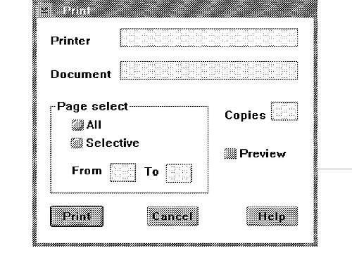

The print menu must display a dialog to enable the user to specify the number of copies, start page, end page, or any other application-specific print options. A confirm push button (for example, Print) initiates the print. The following figure is an example of a print dialog.

Application Printer Setup Dialog
The Printer entry field is the read-only name of the printer object (queue) that the user chose from the Printer Setup dialog. The Preview checkbox is used to preview the printed output on the screen. This can be achieved by opening an OD_MEMORY device context to the printer driver and drawing the picture into the bit map. A BITBLT (Bit Block Logical Transfer) to the screen shows the resultant page. System fonts should be used instead of device fonts.
Once the user has initiated the print, a PM application must execute the following steps.
10.
The following sections describe each of the above steps in turn.